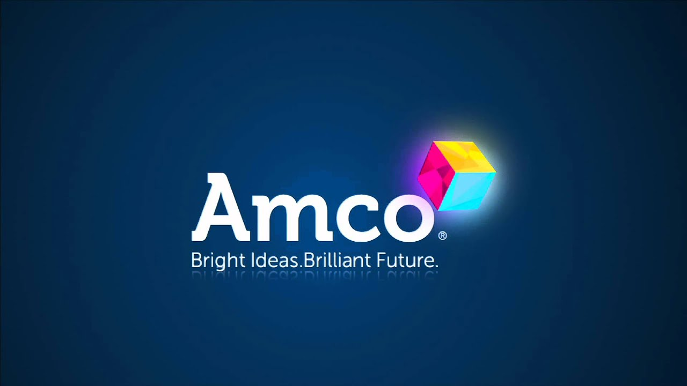

INICIO / ¿QUIÉNES SOMOS? / MODELO EDUCATIVO/ NIVELES EDUCATIVOS / SERVICIOS ESCOLARES / CONTÁCTANOS
MODELO EDUCATIVO
Nuestro Colegio se basa en un Modelo Educativo Humanista y Constructivista con un Sistema Integral con programas y metodologías innovadoras que favorecen el aprendizaje en nuestros educandos un medio para lograrlo es a través del método AMCO, este es un sistema de aprendizaje que se fundamenta en cuatro pilares metodológicos, inteligencias múltiples, inteligencia emocional, mapas mentales y pensamiento crítico, con esto se busca desarrollar procesos de enseñanza aprendizaje innovadores y alumnos felices; así mismo permitirá a nuestros alumnos aprender inglés de una forma natural y espontánea, de la misma manera que aprendieron su lengua materna, este programa se ha ido perfeccionando teniendo en cuenta las necesidades reales de los estudiantes.
Se trata de un método vivo y actual pues día a día se transforma, crece y evoluciona adaptándose a las necesidades actuales.

OBJETIVOS
Formar ciudadanos libres y responsables que sean críticos y reflexivos.
Crear un espíritu de superación y desarrollo personal, que permita un crecimiento integral, con plena libertad y sentido, encaminándolos hacia una comprensión de la realidad.
Que aprendan un segundo idioma, que les permita comunicarse en este mundo globalizado para que sean competitivos.
Ozumbilla No. 354, Mz.23, Lt.18, Col. Los Héroes Tecámac II, Tecámac, Estado de México.